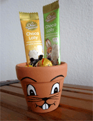
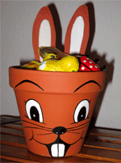

<div id="images" class="centered" >
	<a href="../bilder/galerie/craft-projects/ostern/tontoepfchen/tontoepfchen01-gr.gif" target="blank"> 
		
	</a>
	<a href="../bilder/galerie/craft-projects/ostern/tontoepfchen/tontoepfchen02-gr.gif" target="blank"> 
		
	</a>	
</div>
